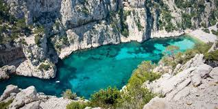
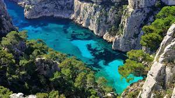

A brief history
Founded around 600 BC by Greek settlers from Phocaea, Marseille is the oldest city in France, as well as one of Europe's oldest continuously inhabited settlements. It was known to the ancient Greeks as Massalia.
Posted on Tuesday, by Yumil Rueda
A brief historyFounded around 600 BC by Greek settlers from Phocaea, Marseille is the oldest city in France, as well as one of Europe's oldest continuously inhabited settlements. It was known to the ancient Greeks as Massalia. |
Now let's talk about food...To be honest, I am a vegetarian so I have never tried any traditional food of this city but speaking about something cliché of the country, the baguette is now part of my day like the tortillas in Mexico. |
|---|
Being such an old city it has a great charm and many places to visit, I will list some of the reasons why Marseille is a great city.
Marseille is a great destination if you like nature, it has a national park of inlets but to get to these places, you have to make long walks but the destination is completely worth it, here are a few pictures.
Calanque en Vau
Calanque Port-Pin